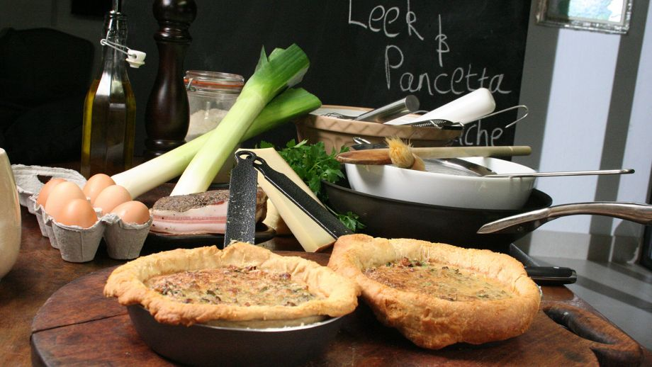

←
☰
Inicio
Calculadoras
Preguntas
Buscador
Registro
Recetas del Chef
Pollo Relleno de Ajo y Castañas
Pastelitos de Atún y Especias
Recetas Más Buscadas
Ensalada de Judías Verdes Aliñada con Mostaza
Farfalles con Requesón, Panceta y Guisantes
Tortitas Picantes
Sandwich de Carne
Sencillo Bollito Mixto

Quiche De Puerros y Panceta
Tacos De Carne Con Mayonesa De Wasabi
Revuelto De Pollo Con Fideos Chinos de Arroz